Continuing with the Alwar State, the program mentioned the following:
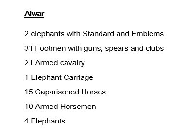
We've already featured the Alwar's Carriage and the State Elephant with guards and bands. I will explain each of the mentions on this list one by one, and show the information and pictures that I have of them. Also, I'll add the photos of the Beau Geste sets that were made, based on this list. So here are the rest of the Alwar Contingent.
2 Elephants with Standard and Emblems
Civil & Military Gazette 13/01:
'2 Elephants with purple, green, yellow and white Standard and Emblem.'
Menpes
... The Alwar group was particularly interesting from the artistic standpoint — warriors on elephants in old costumes,
and everything out of date. They had worn these dresses all their lives, and one felt more in the Alwar State than in
any other that this was the last time the
men of the Orient would be seen by Westerners in these ancient garbs. Soon the old order would give place to new.
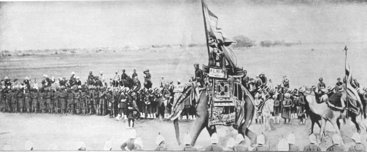
31 Footmen with guns, spears and clubs
Civil & Military Gazette 13/01:
'... with guns, spears and clubs.'
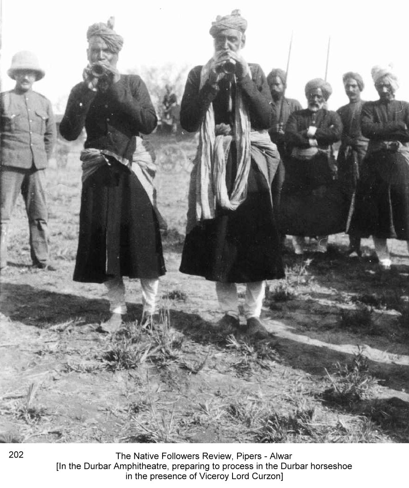
These guys are identified as Alwar's by Gertrude Bell. I have not identified any other of my pictures as belonging to this group.
21 Armed Cavalry
Civil & Military Gazette 13/01:
'... with red and blue uniforms, and blue cloths.'
Madras Times 09/01:
'The Maharaja of Alwar's camelmen wore blue uniforms and yellow puggrees, and sat on crimson saddle cloths. There were
golden sedan chairs and tom tom band, which played deafening tunes, while horses reared high in the air with their
riders before the daïs.'
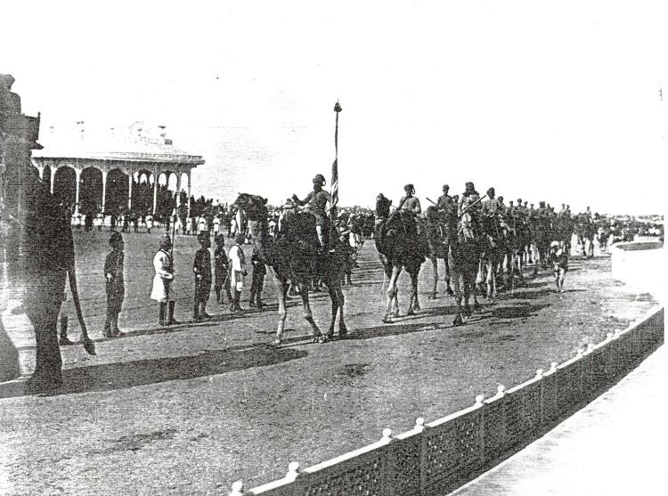
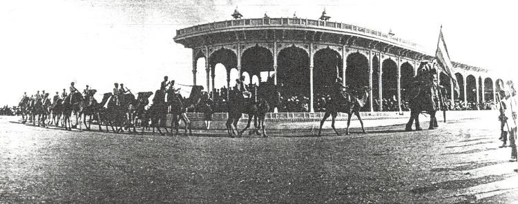
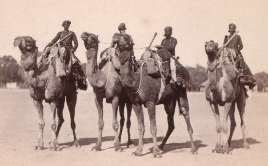
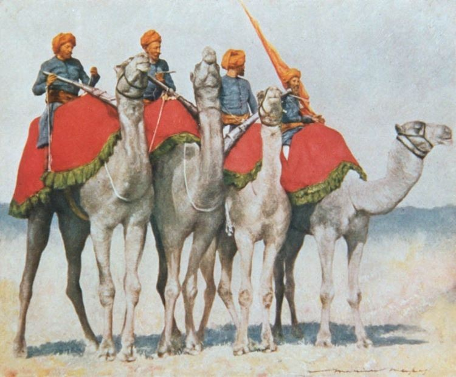
15 Caparisoned Horses
Civil & Military Gazette 13/01:
'...These pranced, curvetted and capered, and of those that capered he capered the highest who rode a white horse with
reddened shanks and tail. But a brown horse walked past the Viceroy on its hind legs and hopped.'
Pioneer Mail 16/01 / The Coronation Durbar:
'Feats of horsemanship were given, riders backed their animals until they plunged and reared in startling fashion. The
best performances of this kind were by two retainers from Alwar, their horses rising almost to the perpendicular.'
A Motley Army:
'The feats of horsemanship of some of the Alwar horsemen as they afterwards passed before the Viceroy, aroused the utmost
enthusiasm.'
Wheeler:
... and several performimg horses, one of which passed the Daïs with a series of jumps on its hind legs. These animals
were not taught these tricks for any circus purpose; they were schooled in olden times for direct use in warfare.'
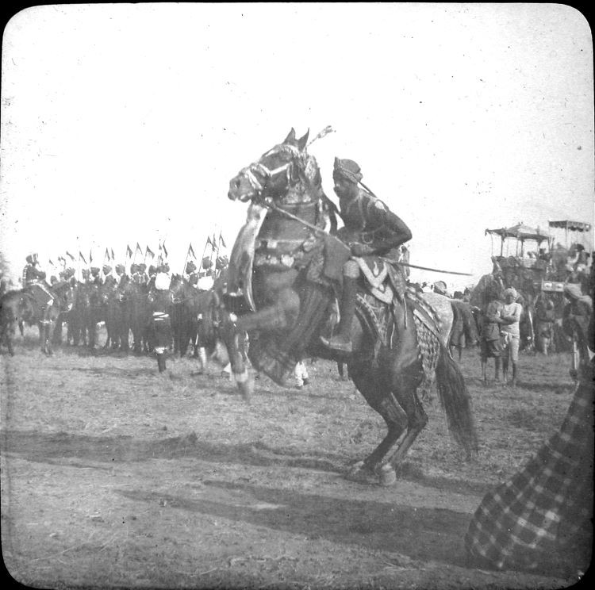
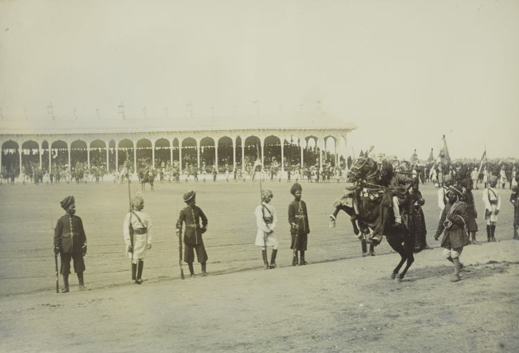
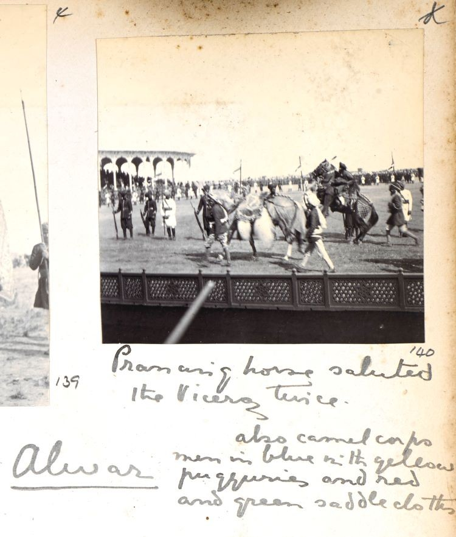
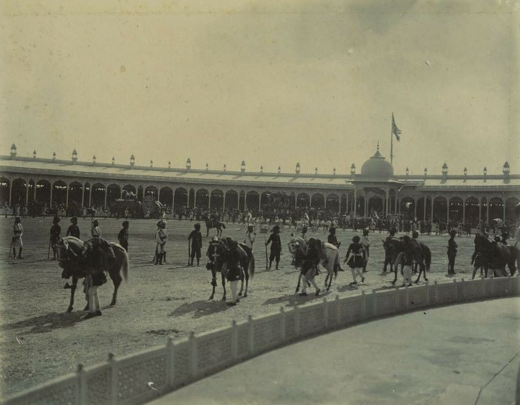
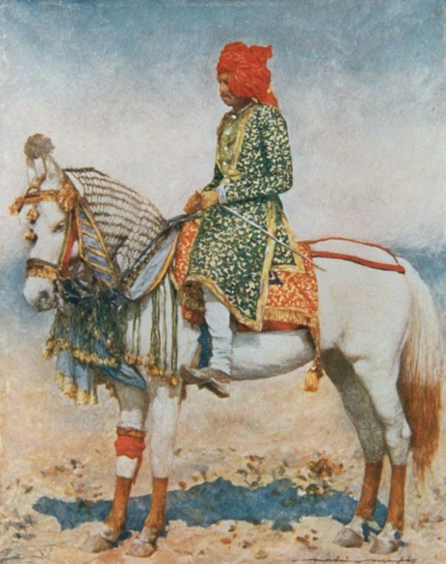
These horses are obvioulsy among our plans. I still have to figure out how to make the horses in two legs safe from breakages and bendings. We'll see.
10 Armed Horsemen
Civil & Military Gazette 13/01:
'...in mail, with spears and skin shields.'
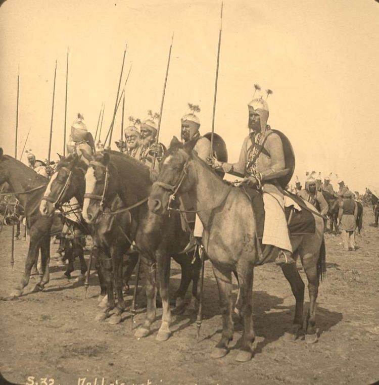
Sheldon Williams sketch of these cavalrymen
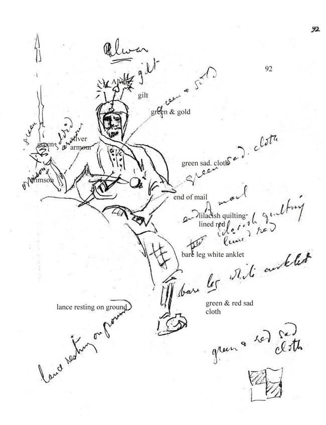
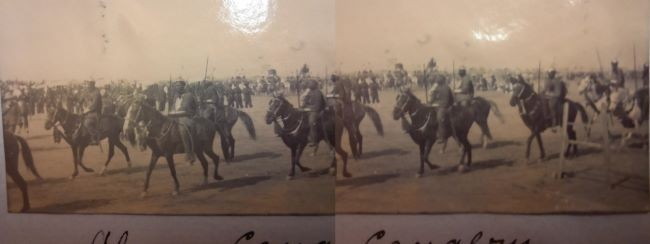
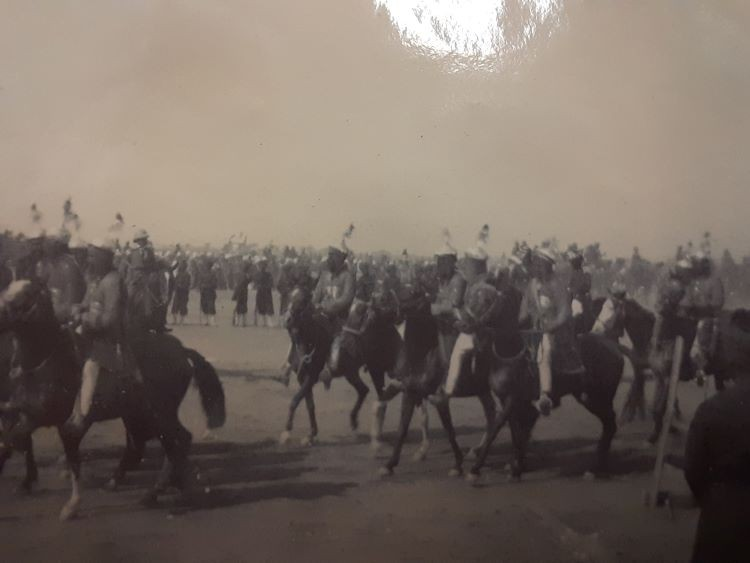
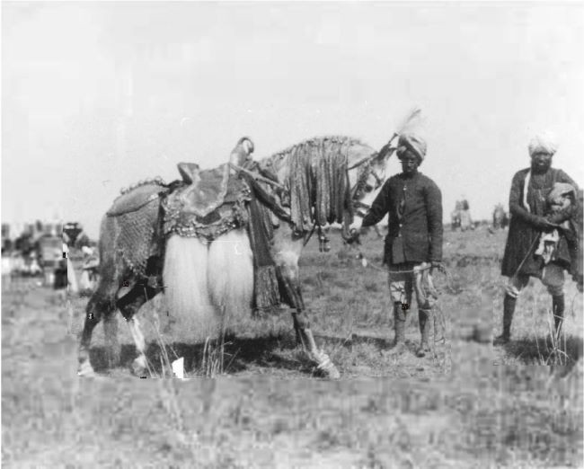
Menpes plate of an Alwar's horseman
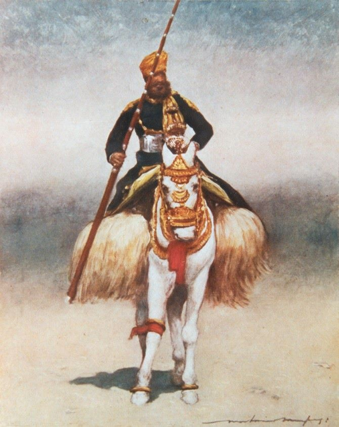
4 Elephants
Madras Times 09/01:
'An elephant carriage, drawn by four elephants guarded by mailed men, followed; next a dozen bullock carts decorated with
red cloths, then a huge elephant with an enormous syren, and the audience simply rose.'
---------------------------------------------------------
These raths were not mentioned in the program, but the newspapers describe them as Alwar's, as well as a foot note in one of the British Library's albums. As the program was printed before the Retainer's Review, there might have been changes made for the day. There are many of these omissions on the program's pages. I am going to feature them in the Alwar's group, but I am not certain of that. They are so beautiful! They might be Rewa's as well. I'll let you know if I can confirm that in any way.
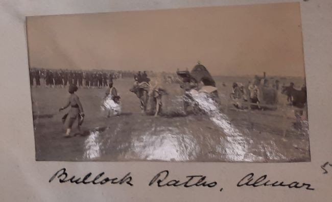
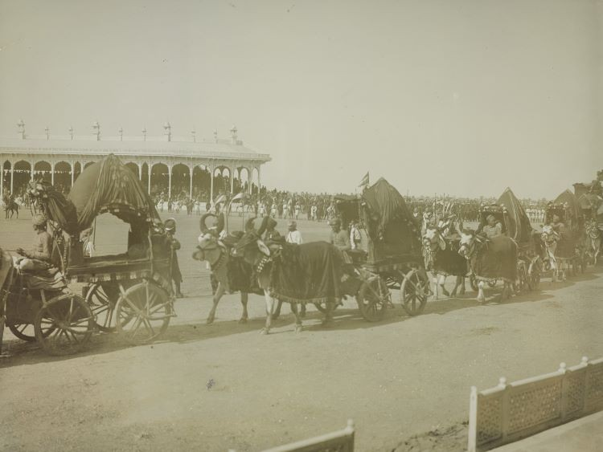
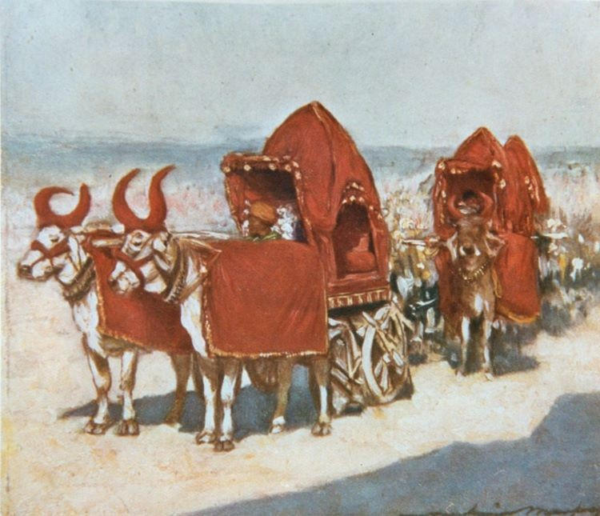
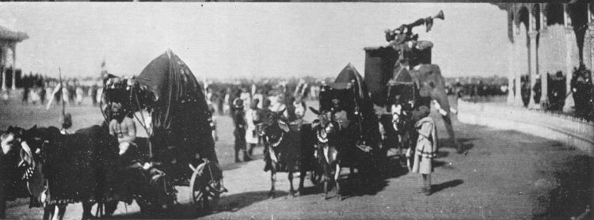
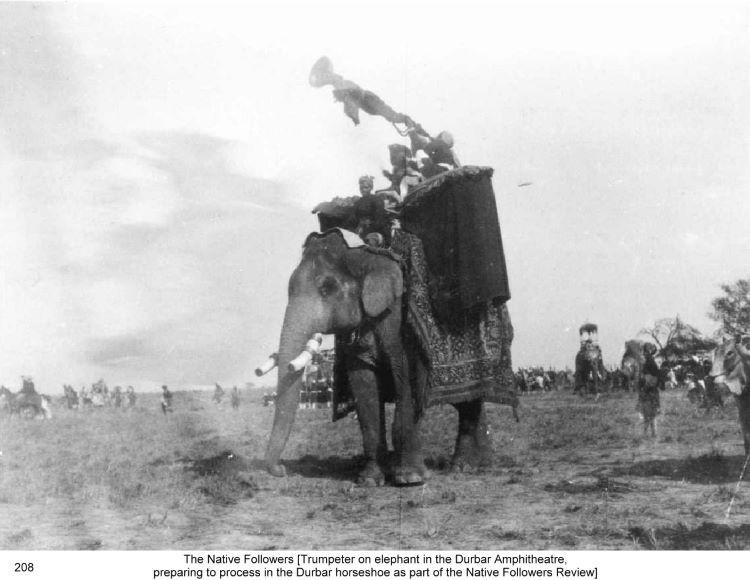